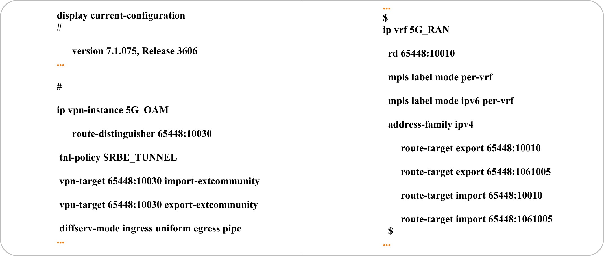
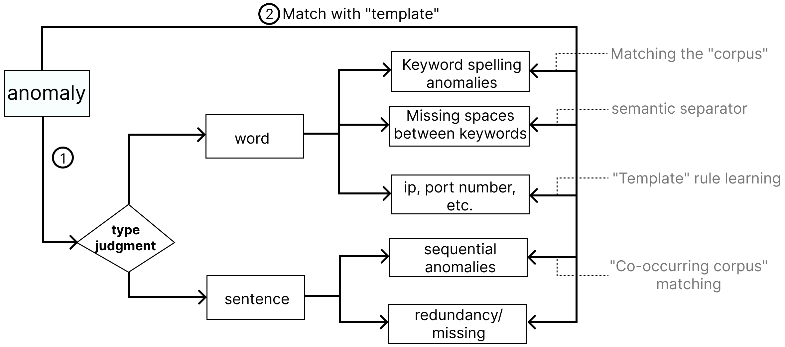

The problem of device configuration anomalies is becoming increasingly significant with the development of network communication equipment. Traditional detection tools usually only detect spelling, formatting, and other issues and cannot identify logic problems. Consequently, engineers' experience plays a critical role in detecting such anomalies. To improve network service quality, reduce repetitive work, and address issues like slow detection speed, weak detection capabilities, and poor versatility of traditional tools, this paper draws on the design concept of abstract syntax trees and proposes an innovative unsupervised anomaly detection algorithm based on "configuration statement trees." The algorithm can identify seven types of detectable anomalies and provides recommendations for anomaly localization and modification plans. The paper evaluates and compares the algorithm based on indicators such as detectable types, runtime, accuracy, and recall using configurations from the operator's current network operation. The results demonstrate that the algorithm has good robustness and can effectively address network communication issues resulting from configuration anomalies in network communication equipment.

Figure 1: We selected the configuration files of several representative manufacturers. The left is part of the statement of a configuration file of "H3C" manufacturer, and the right is part of the statement of a configuration file of "ZTE" manufacturer. The configuration files don't differ much in structure.
Figure 2: We replace the ip address, port number, version number, hash password and other parameters in the configuration file with special symbols. Then, we regard two adjacent configuration sentences as a set of "co-occurrence corpus", and we count all the "co-occurrence corpus" in the sample and their frequency of occurrence, trying to infer the possible types of configuration anomalies from the statistical results.
Figure 3: (a) is a statement fragment in the configuration file, (b) is the “configuration statement tree” of the configuration file.We structure each configuration file into a tree of configuration statements. A tree represents a configuration file, the second layer of nodes represents paragraph information, and the third layer and later represent each word and its type.
Figure 4: (a) is the branch constructed without considering the association between the parameter contents in the paragraph, (b) is the branch constructed after considering the association between the parameter contents.

Figure 5: Recommended method steps for locating and modifying exceptions.
Table 1: Comparison of detection capabilities of different algorithms.
Table 2-3: Comparative analysis of accuracy and recall rates.
Figure 4: Detection rate of 100 groups of models with different characteristics.
This work was supported by the grants of the National Key R&D Program of China (2022ZD0160805), Human-Computer Interaction Theory and Methods for Visual Analysis of Big Data in Ubiquitous Computing Environment (62141217) as well as ChinaUnicom.